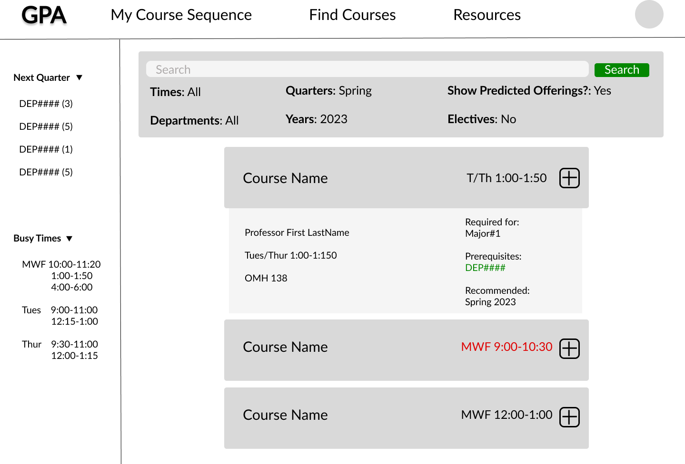
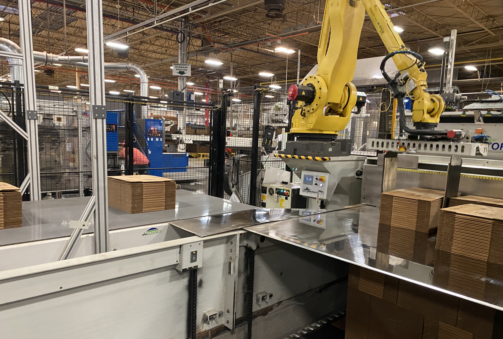
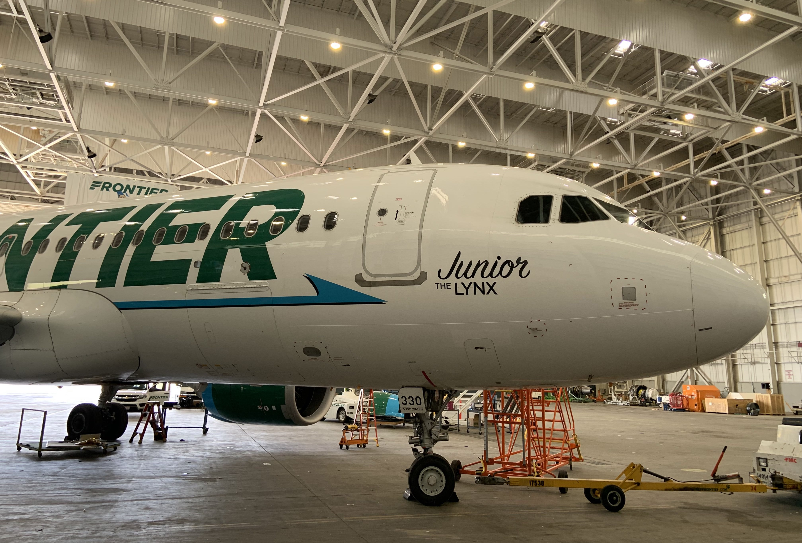
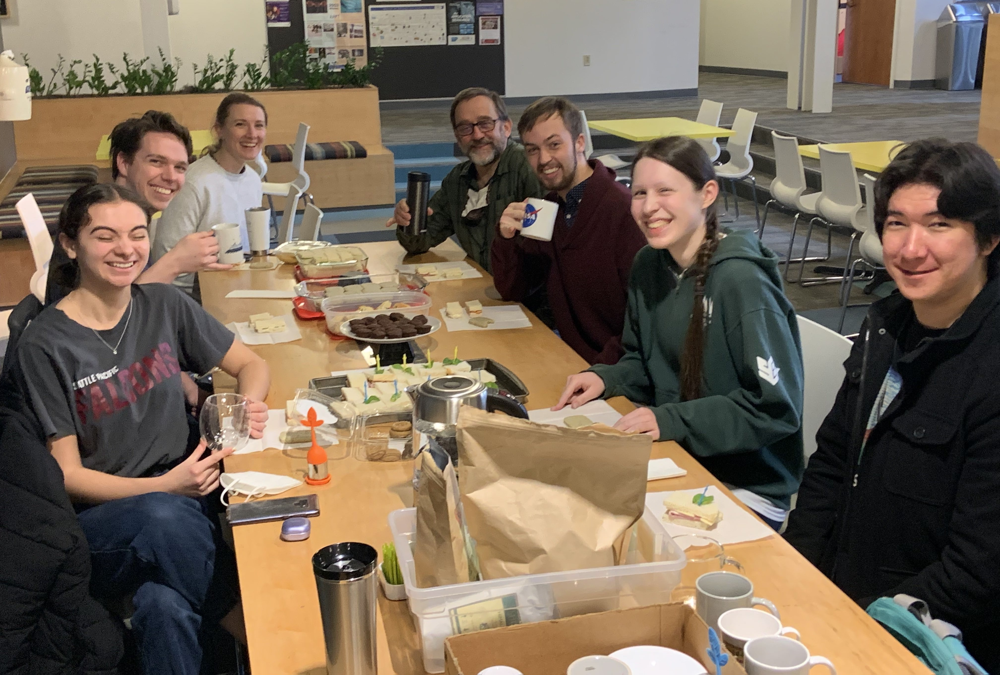
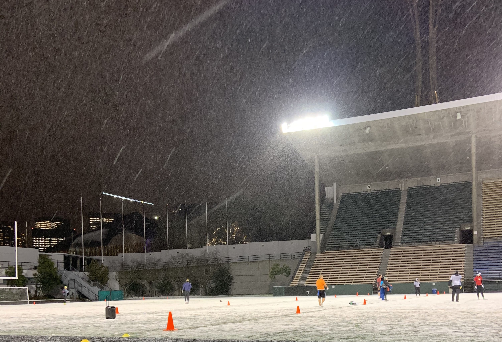
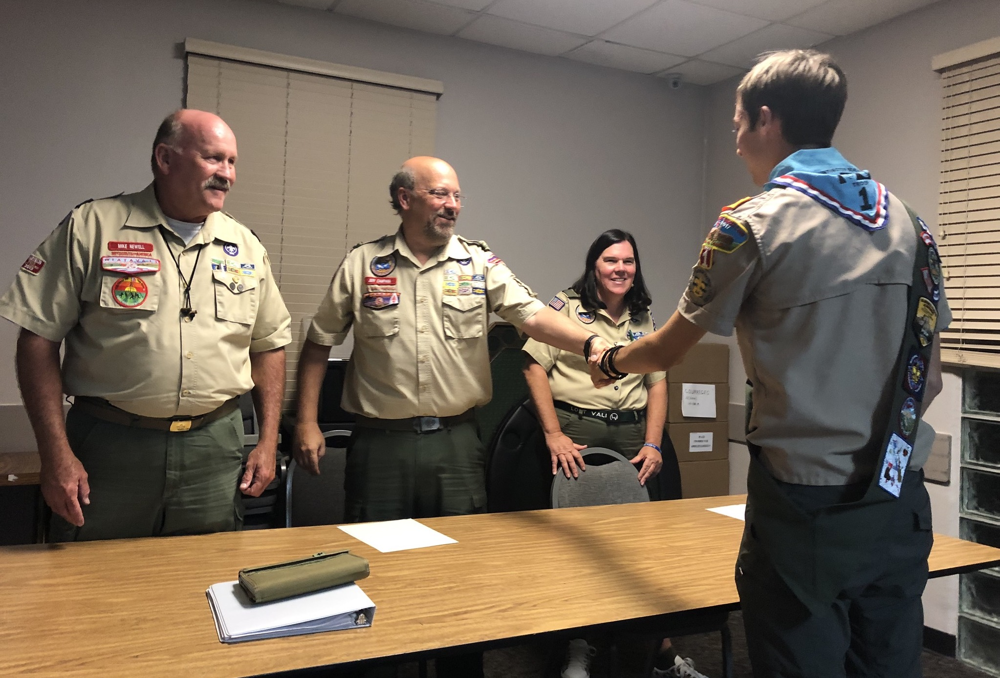

I am an analyst and programmer currently working as a Continuous Improvement Manager at New-Indy Packaging in Los Angeles County, California where I innovate and apply dynamic, data-driven solutions to improve operational efficiency and profitability.
I graduated from Seattle Pacific University as a triple major in June 2023, majoring in Computer Science (B.S.), Physics (B.S.), and Honors Liberal Arts (B.A.). A motivated worker, I pride myself on my work ethic and ability to work both individually and as part of a team. I am passionate about telling stories with data to produce tangible results and am particularly experienced in aviation and operations. I am thrilled to say that my award-winning work has been used in over 60 countries around the world across all 6 continents. Please take a look and feel free reach out to me with any questions or comments. I would love to be in touch.
Highlighted Projects
Computer Vision Deep Learning in Astronomical Image Classification
I researched and developed and developed a prototype algorithm that can identify astronomical phenomena from photos automatically. Read on Seattle Pacific University's Digital Commons

Graduation Planning App
I developed software with a team of peers that will assist students in class planning using robust data stuctures and databases.
See the code
Additional Projects
Career Experience

Continuous Improvement Manager
I improved operational efficiency using data-driven insights in a leadership role

Inflight Operations Intern
I worked with data and flight attendents to enhance a complex logistical network
Deputy Data Director
I oversaw massive phone banks and managed large scale data for a U.S. Congressional Campaign

Physics Learning Assistant
I guided peers in understanding scientific material while concurrently studying pedagogy to constantly improve
Physics Tutor
I consulted with students and parents to establish specific learning goals with marked improvements in student test scores

Supervisor & Referee
I implemented conflict management techniques in a fast-paced environement while recognizing and reacting
to complex situations in real time

Eagle Scout
I led a troop of 60 boys and conducted a project that benefited a local Alzheimer's home
Recommendations
“
Andrew is a dedicated, committed, kind and caring student, who can thrive in any environment. ”
- Chloe Green
Head of Global Opportunities, Roehampton University
“
He knows when and how to ask questions in high levels or details, and is able to assess his skill level and set a reasonable goal and meet it diligently. ”
- Dr. Taiwoo Park
Former Teacher; Google Software Engineer
“
Andrew is thoughtful and conscientious. He works diligently at all he does, and attempts to see all sides of a problem in order to bring about good solutions. I have known him to be very persistent and mature for his age. He is particularly skilled at statistics and data analysis. ”
- Rev. Chris Stratton
Academic Dean, Pacifica Christian High School
“
One of the leaders amongst his peers, providing essential help on the data side of the program. He is active, persistent, and consistent, and receives my full endorsement for future employment opportunities. ”
- Adam Tallabas
Fellowship Coordinator, Harley Rouda for Congress

{kind=link}
{kind=link}
{kind=link}
{kind=link}
{kind=link}
{kind=link}
{kind=link}
{kind=link}
{kind=link}